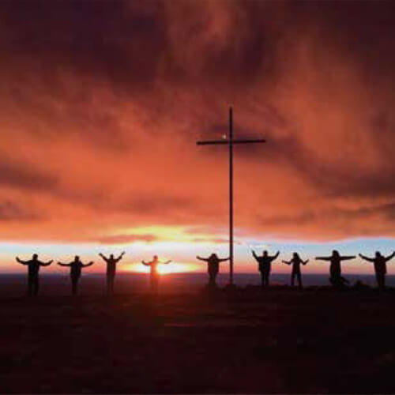

Serás protagonista con tus acompañantes del corazón de nuestros sabores. Comenzaremos a las 10:00hs finalizando con el almuerzo de 6 pasos a las 12:30hs. Elaborarás y prepararás la Mise en place. Harás empanadas criollas. Crearás una versión propia de empanada con ingredientes creativos. Charlarás con nuestro chef y su staff de anécdotas y sobre la coordinación de tareas con una buena copa de vino.
Almuerzos al aire libre
Te invitamos a aprender los secretos de la cocina regional junto con nuestros chefs. Animate a participar de nuestras clases personalizadas al aire libre con la mejor vista a la Cordillera de los Andes, respetando el producto local. Tomando el concepto “de la huerta a la mesa” y usando el fuego como forma de cocción. Al final de la clase, podrás degustar cada uno de los platos elaborados.
Experiencia Vendimia
Recorriendo los viñedos, nuestros expertos transmitirán la filosofía de la época de cosecha, los procesos que le dan vida al vino, las características y cuidados de cada varietal. Luego visitaremos nuestra Bodega y su línea de producción. También se lleva a cabo una cosecha recreativa y la clásica pisada de uvas. En el cierre podrán disfrutar de un asado entre los viñedos, con una imponente vista a la Cordillera de los Andes.
Cabalgatas en Los Andes
En una cabalgata de 4 horas, conocé las mejores vistas de la Cordillera de los Antes. Sumate a esta aventura junto a los expertos en la zona, y descubrí los lugares más lindos. Es una actividad que depende de las condiciones climáticas
Trekking en Los Andes
Van a poder elegir entre una gran variedad de trekkings e hikings en la zona de la Cordillera de los Andes. Cada uno es planeado de acuerdo a las preferencias y las aptitudes de los participantes, descubriendo los mejores paisajes.

Disfrutar el atardecer en la montana
Disfrutarán de la caida del sol en un escenario único, el espectacular amanecer del Valle del Uco desde la cima de la montaña. Esta actividad inicia desde el hotel en camioneta 4x4 y al llegar al pie de la cordillera el recorrido continúa caminando o a caballo.